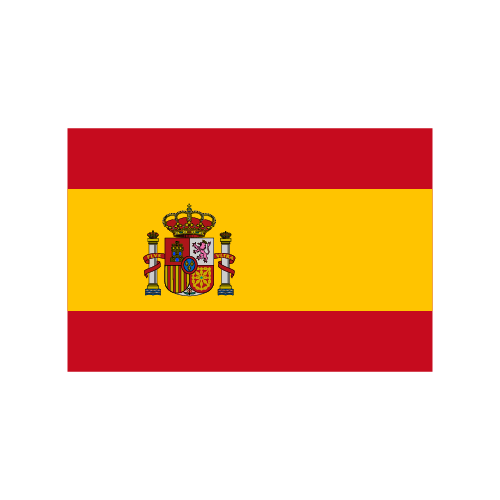

Datos de España actualizados
Datos de España actualizados
Confirmados: {{countryData[this.countryData.length - 1].Confirmed}} -{{rangeConfirmed}}+{{rangeConfirmed}}
En activo: {{countryData[this.countryData.length - 1].Active}} -{{rangeActive}}+{{rangeActive}}
Fallecidos: {{countryData[this.countryData.length - 1].Deaths}} +{{rangeDeaths}}
Recuperados: {{countryData[this.countryData.length - 1].Recovered}} +{{rangeRecovered}}-{{rangeRecovered}}

Datos Mundiales actualizados
Confirmados: {{worldData.TotalConfirmed}}
Fallecidos: {{worldData.TotalDeaths}}
Recuperados: {{worldData.TotalRecovered}}